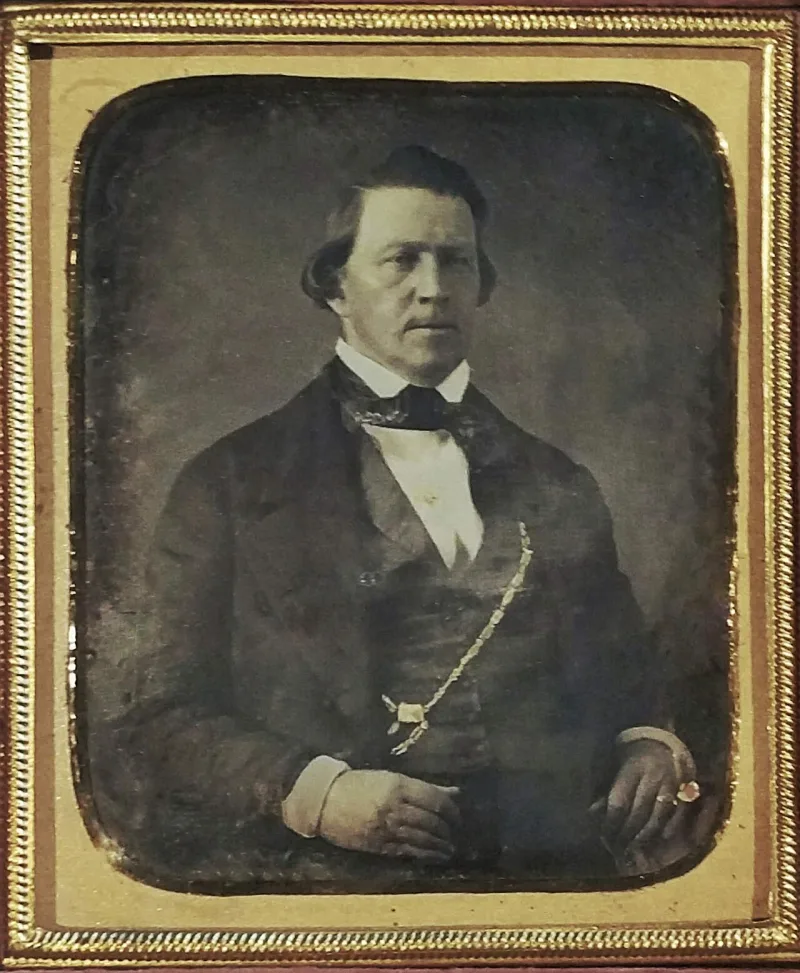
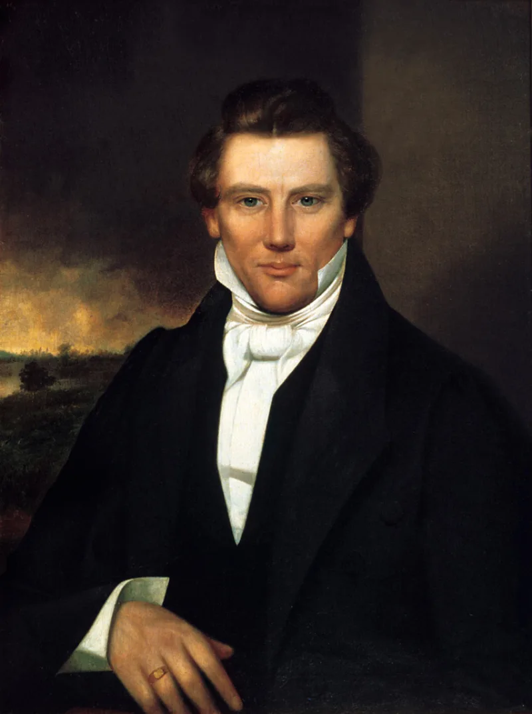

The LDS answer holds up. Do not lead with this one.
That the White Horse Prophecy is Latter-day Saint doctrine. That a Mormon will ride in and save the Constitution when it hangs by a thread, and that Mormon politicians think they are the one.
The church repudiated it officially in 2010. Its statement says the story is "based on accounts that have not been substantiated by historical research and is not embraced as Church doctrine." The full text is a secondhand recollection from 1902, of doubtful origin.
Cite it as doctrine and your friend quotes the 2010 statement back at you. The conversation is over, and you handed them the ending.
The narrower teaching is genuinely attested. That the Constitution will hang by a thread, and the elders will save it.
Brigham Young taught it. So did John Taylor — see Journal of Discourses 7:15.
Modern leaders invoked it too, including Ezra Taft Benson.
Do not lead with White Horse. Lead with the thread quotes.
Those came from prophets' own mouths in documented sermons, and cannot be waved off as folklore.
"Brigham Young said the Constitution would hang by a thread. What did he mean?"


The church repudiated it in 2010, and the text is a 1902 secondhand account.
The church officially repudiated it in 2010. Its statement says the story is 'based on accounts that have not been substantiated by historical research and is not embraced as Church doctrine'.
The full White Horse text is a secondhand recollection from 1902, of dubious provenance.
There is a kernel to keep, though. The narrower motif is genuinely and repeatedly attested in leaders' teaching. That the Constitution will hang by a thread, and the elders will save it. Brigham Young and John Taylor taught it, and modern leaders such as Ezra Taft Benson invoked it.
Do not lead with this: use the hang-by-a-thread quotes instead.
Cite the White Horse document as doctrine and the member quotes the 2010 repudiation back at you. The conversation is over, and you handed them the ending.
The defensible move is the kernel. The hang-by-a-thread teaching came from prophets' own mouths in documented sermons, including Journal of Discourses 7:15.
That raises the same question with sources the church cannot disown as folklore. Use the thread quotes. Never lead with 'White Horse'.